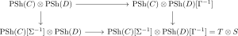

4.3. Limits and colimits of topoi
The variance between topoi and logoi makes the existence problem asymmetric. Colimits of topoi are limits of logoi, and these are computed in the underlying category of categories. Limits of topoi, equivalently colimits of logoi, require an explicit construction by generators and relations. Even when a general limit of topoi is not computed on underlying categories, a filtered limit is. Finally, finite products of topoi admit a particularly concrete description by the tensor product of cocomplete categories. We treat these four assertions in turn.
The categories \(\Topos\) and \(\Logos\) admit small limits and colimits. Furthermore, the following properties are satisfied:
The inclusion \(\Logos \hookrightarrow \Cat\), \(\phi \mapsto \phi^*\), preserves limits.
The inclusion \(\Topos \hookrightarrow \Cat\), \(\phi \mapsto \phi_*\), preserves filtered limits.
The inclusion \(\Logos \hookrightarrow \CAlg(\Cat^{\colim})\) preserves finite coproducts. In particular:
\(\An\) is the terminal topos.
The product \(T \times S\) of two topoi is computed as the Lurie tensor product \(T \otimes S\) of cocomplete categories.
This theorem does not give an explicit general description of all limits in \(\Topos\) (e.g. pullbacks or cosimplicial limits); these are in general more subtle to describe.
4.3.1. Limits of logoi and colimits of topoi
Limits of logoi are computed on their underlying categories.
The category \(\Logos\) admits small limits, and the inclusion \(\Logos\hookrightarrow\Cat\) preserves them. Equivalently, \(\Topos\) admits small colimits.
Proof
4.3.2. Colimits of logoi and limits of topoi
The reverse construction uses presentations by generators and relations.
The categories \(\Logos\) and \(\Topos\) admit small colimits and small limits, respectively.
Proof
4.3.3. Filtered limits of topoi
Filtered limits are exceptional among limits of topoi: they are computed on the underlying categories.
The inclusion \(\Topos\hookrightarrow\Cat\), \(\varphi\mapsto\varphi_*\), preserves filtered limits.
Proof
4.3.4. Products of topoi
Finite products have a concrete description in terms of the tensor product of cocomplete categories.
The inclusion \(\Logos \hookrightarrow \CAlg(\Cat^{\colim})\) preserves finite coproducts. In particular, \(\An\) is the terminal topos, and the product of two topoi \(T\) and \(S\) is their tensor product \(T\otimes S\) as cocomplete categories.
Proof

Proof
The category \(\Topos\) is tensored and cotensored over \(\Cat\): for topoi \(S,T\) and a category \(C\), there exist topoi \(S^C\) and \(C \otimes T\) such that
Show that \(C \otimes T \simeq \Fun(C,T)\), and describe \(S^C\) using a presentation of \(S\).
References
- Jacob Lurie. Higher topos theory. Ann. Math. Stud. 170, Princeton, NJ: Princeton University Press. 2009.